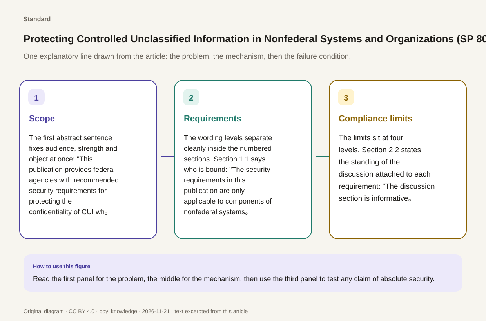
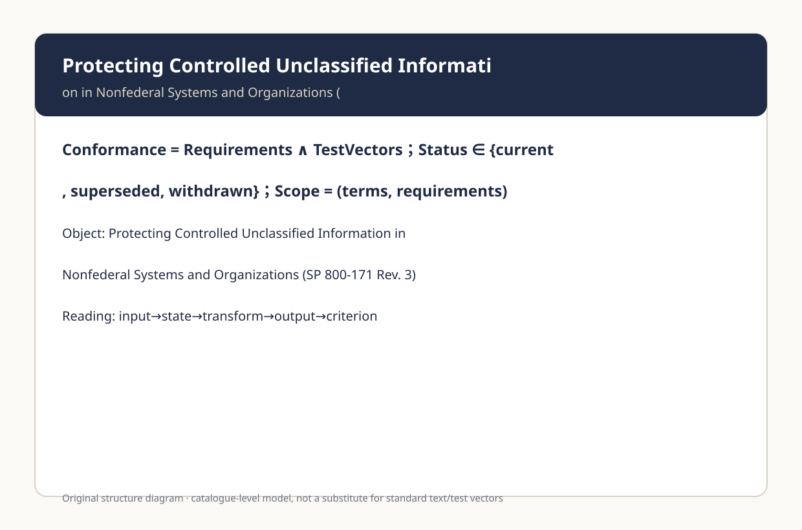

Principles
Standard: Protecting Controlled Unclassified Information in Nonfederal Systems and Organizations (SP 800-171 Rev. 3) (保护非联邦系统中的受控非密信息（SP 800-171 Rev.3）). The first abstract sentence fixes audience, strength and object at once: "This publication provides federal agencies with recommended security requirements for protecting the confidentiality of CUI when the information is resident in nonfederal systems and organizations." The next narrows it to components: "The requirements apply to components of nonfederal systems that process, store, or transmit CUI or that provide protection for such components." The third states how it takes effect, through contracts rather than by itself: "The security requirements are intended for use by federal agencies in contractual vehicles or other agreements established between those agencies and nonfederal organizations." The last hands assessment over to the companion document: "This publication can be used in conjunction with its companion publication, NIST Special Publication 800-171A, which provides a comprehensive set of procedures to assess the security requirements." The keyword line lists the subject vocabulary in order, including "organization-defined parameter; security assessment; security control; security requirement." What this file supplies is a recommended-level requirement list: the control catalogue itself is SP 800-53 and the assessment procedures are SP 800-171A.

Why it matters
The gap is laid out as a chain of consequence in Section 1. Responsibility does not move with the data: "The responsibility of federal agencies to protect CUI does not change when such information is shared with nonfederal organizations." Equivalent protection is therefore needed and has a hard precondition: "To maintain a consistent level of protection, the security requirements for safeguarding CUI in nonfederal systems and organizations must comply with Federal Information Processing Standards (FIPS 199) publication [6] and FIPS 200 [7]." The requirements are not invented but tailored: "The requirements are derived from the controls in NIST Special Publication (SP) 800-53 [8]." and "SP 800-171 security requirements represent a subset of the controls that are necessary to protect the confidentiality of CUI." The baseline comes from footnote 11, and that same footnote yields to higher authority in its next sentence: "In accordance with 32 CFR 2002 [5], CUI is categorized at no less than the FIPS 199 [6] moderate confidentiality impact value. However, when federal law, regulation, or government-wide policy establishing the control of CUI specifies controls that differ from those of the moderate control baseline, then the applicable law, regulation, or government-wide policy is followed." The moderate tier is therefore the floor this copy sets, not an unchangeable rule. Together these sentences give the reason: once CUI sits in nonfederal systems it may not be downgraded and no ready list exists, so the moderate baseline is tailored for confidentiality into a requirement set that can be put into a contract.
Applications
The wording levels separate cleanly inside the numbered sections. Section 1.1 says who is bound: "The security requirements in this publication are only applicable to components of nonfederal systems that process, store, or transmit CUI or that provide protection for such components." and who invokes them: "The requirements are intended for use by federal agencies in contractual vehicles or other agreements that are established between those agencies and nonfederal organizations." Section 2.2 leaves more than one must for organization-defined parameters, both addressed to the nonfederal party: the body sentence "If a federal agency or a consortium of agencies do not specify a particular value or range of values for an ODP, nonfederal organizations must assign the value or values to complete the security requirement." and, in footnote 14, "NIST does not establish or assign values for ODPs. If ODP values for selected security requirements are not formally established or assigned by a federal agency or a consortium of federal agencies, nonfederal organizations must assign those values to complete the requirements." Section 3 only describes its own contents and naming: "This section describes 17 families of security requirements for protecting the confidentiality of CUI in nonfederal systems and organizations." and "Not all security requirements mention CUI explicitly." Inside §3.1 the requirements are lettered imperatives, for example the second item of account management: "Create, enable, modify, disable, and remove system accounts in accordance with policy, procedures, prerequisites, and criteria." So must-level wording is not confined to completing an ODP value and federal compliance: Section 2.2 itself prints two such sentences, a discussion section in Chapter 3 uses must for a system capability (under 03.03.01 Event Logging, organizations may determine that systems must have the capability to log every file access, activating it only under specific circumstances because of the burden on performance), and the Authority paragraph uses shall instead. That is an observation from reading the copy, not a closed list. What does hold is that the requirement statements themselves are lettered imperatives and gain their force through the contract.

Limits & attacks
The limits sit at four levels. Section 2.2 states the standing of the discussion attached to each requirement: "The discussion section is informative, not normative." with the reason next: "It is not intended to extend the scope of a requirement or influence the solutions that organizations may use to satisfy a requirement." Section 1.1 excludes one class of holder: "The requirements do not apply to nonfederal organizations that are collecting or maintaining information on behalf of a federal agency or using or operating a system on behalf of an agency." Section 3 concedes that some systems cannot take everything: "Some systems, including specialized systems (e.g., industrial/process control systems, medical devices, computer numerical control machines), may have limitations on the application of certain security requirements." The Authority block makes application to national security systems conditional: "such standards and guidelines shall not apply to national security systems without the express approval of appropriate federal officials exercising policy authority over such systems." And Appendix E bounds this very release: "The current release of this publication does not include any errata updates." Discussions create no duty, agencies on whose behalf information is held fall under FISMA instead, enduring exceptions go to the system security plan, and national security systems need express approval.
History
Read line by line, this copy prints "NIST Special Publication 800 NIST SP 800-171r3" on the number line (the duplicated identifier is an artifact of the extraction), then the title line "Protecting Controlled Unclassified Information in Nonfederal Systems and Organizations", the author line "Ron Ross Victoria Pillitteri", the division line "Computer Security Division Information Technology Laboratory", and the running head "NIST SP 800-171r3 May 2024", so the date is May 2024; the free-access line reads "This publication is available free of charge from:" followed by the DOI 10.6028/NIST.SP.800-171r3. The publication history block gives review and supersession in one run: "Approved by the NIST Editorial Review Board on 2024-04-23 Supersedes NIST Special Publication 800-171r2 (February 2020; Includes updates as of 01-28-2021)", and the citation line gives both authors and the year: "Ross R, Pillitteri V (2024) Protecting Controlled Unclassified Information in Nonfederal Systems and Organizations. (National Institute of Standards and Technology, Gaithersburg, MD), NIST Special Publication (SP) NIST SP 800-171r3." The acknowledgements name the editorial and production staff "Jim Foti, Jeff Brewer, Eduardo Takamura, Isabel Van Wyk, Cristina Ritfeld, Derek Sappington, and Carolyn Schmidt" and thank Kelley Dempsey for the initial research behind the prototype CUI overlay. Appendix E opens its revision list with "This publication incorporates the following changes from the original edition (February 2020; updated January 28, 2021):" and one entry reads "Eliminated the distinction between basic and derived security requirements".
Worked example & verification
Formal model and reproduction steps
[S=\min_i S_i,\quad S_i\in{\text{密钥强度},\text{分组安全},\text{实现安全}}]
Protecting Controlled Unclassified Information in Nonfederal Systems and Organizations (SP 800-171 Rev. 3): the registered public parameters, key material or randomness, and message are mapped through the stated transformation to an output checked against the registered criterion. The worked example is a structural reproduction, not a new test vector; parameter ranges, standard versions and implementation details remain source-bound.
References
- Wikipedia search entry for 保护非联邦系统中的受控非密信息（SP 800-171 Rev.3）. https://zh.wikipedia.org/w/index.php?search=%E4%BF%9D%E6%8A%A4%E9%9D%9E%E8%81%94%E9%82%A6%E7%B3%BB%E7%BB%9F%E4%B8%AD%E7%9A%84%E5%8F%97%E6%8E%A7%E9%9D%9E%E5%AF%86%E4%BF%A1%E6%81%AF%EF%BC%88SP%20800-171%20Rev.3%EF%BC%89
- Handbook of Applied Cryptography (Menezes, van Oorschot, Vanstone). https://www.cacr.math.uwaterloo.ca/hac/